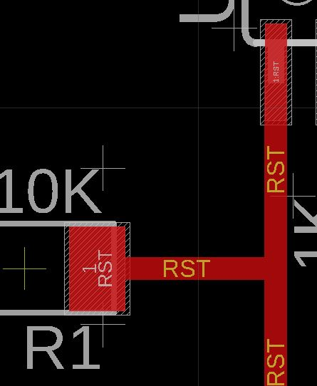
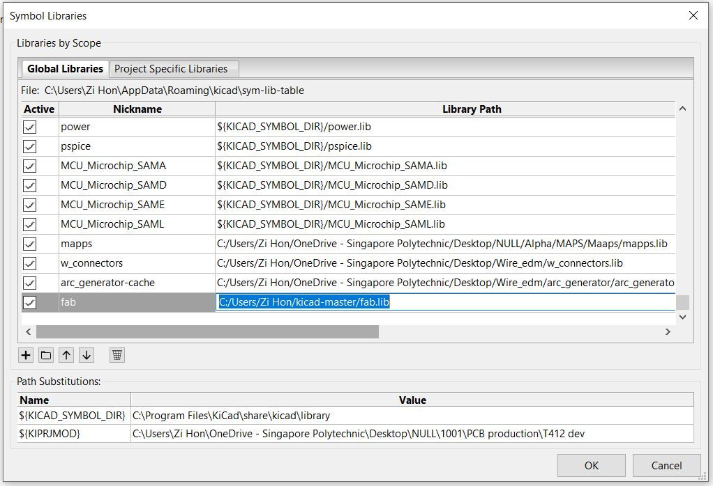
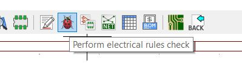
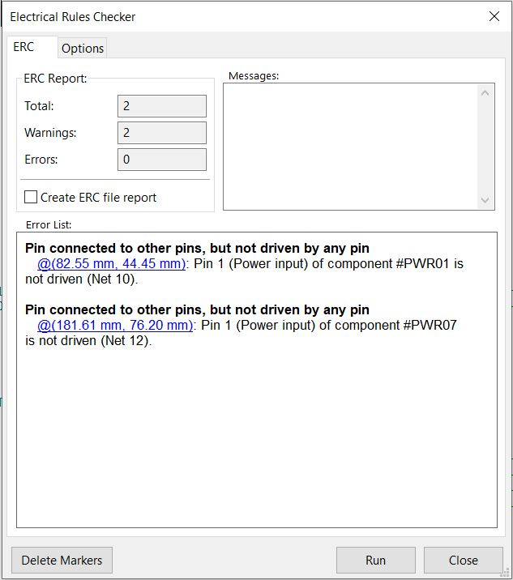
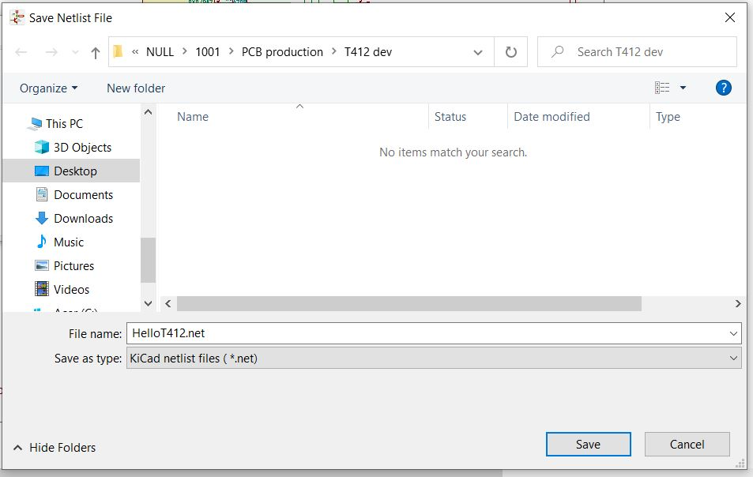
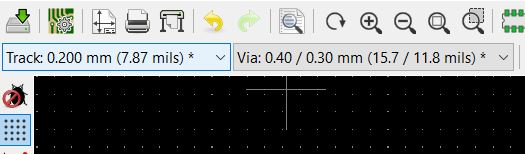
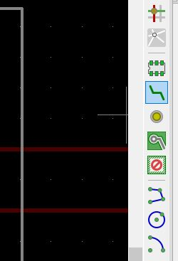

Electronics Design
This page will document how PCBs can be deisgned and prototyped.
- PCB design in Eagel:
- Schametic capture in Eagle
- PCB layout in Eagle
- Toolpath generation with mods
- PCB milling
- Schametic capture in Kicad
- PCB layout in Kicad
- Toolpath generation with Flatcam and milling
PCB design in Kicad:
PCB design in Eagel
Schematic capture in Eagle
In schematic capture parts can be added wit the "Add Part" tool.
Parts to be added can be chosen in this menu.
Parts can be searched here, '*' is used to search partial names.

The part is placed in the schematic.
The other parts are placed near to where they will connect to the other components.
Labels can be added to reduce the number of wires used and make the schematic easier to read.
The labels are placed.
Parts can be named.
This resistor is named "R1".
Values can be assigned to parts.

This resistor is assigned a value of 10Kohms.
The other connections are made.
A new board layout is generated.
PCB layout in Eagle
The components are place so that the smallest amount of air wires are crossing.
Wires are routed with this tool.
Trace width can be set here.
Traces are being routed.
The resulting routed trace is shown here.
The copper traces are fully routed.
For the board outline a line is used.
The line is drawn in the milling layer.
"Mitre" is used to fillet the corner.
A fillet is selected and a fillet radius is defined.
Text can be added to the PCB.
Text is defined here.
The added text is shown in the PCB layout.
This is the final PCB design.
Download Eagle filesToolpath generation with mods
This is the PNG generated for the copper traces.
This is the PNG generated for the board outline.

Below is the toolpath generation for the front copper isolation milling.
This is the resulting toolpath.

This is how the toolpath is generated for the board outline.
Download CAM filesPCB milling
The CNC has started cutting the text.
Isolation milling of the traces is being done.
This is the toolpath shown in the CNC controller.
Isolation milling continues.
More isolation milling.
The board outline is being cut.
The milling has been completed.
The PCB has been removed from the CNC, the result is shown here.

Burrs has been removed and the copper is being peeled off.
The PCB has been populated.

PCB design in Kicad
Schematic capture in Kicad
Symbol libraries are configured here.
The symbol library is added.
The footprint library is added.
This is the schematic capture in Kicad.
Symbols can be placed with this tool.
Parts are chosen here. Parts can be searched.
The Attiny412 is selected. The schematic symbol can be seen.
The other are added and placed close to where they are connected.

Wires are placed with this tool.
Wires have been placed.
Schematic symbols are annotated with this utility.
Parameters for annotation are set first.
The annotation is successful.
Here are the annotated schematic.
Electrical rules check (ERC) can be used to check for errors in the design.
This is the ERC menu
The ERC finished with two warnings and 0 errors. These can be ignored.
Footprints can be assigned to symbols here.

Footprints are assigned to symbols.
A netlist is generated with this tool.
Using the default parameters, a netlist is generated.
The netlist is saved.
A PCB layout is created with "PCBNew".
PCB layout in Kicad
The netlist created is loaded now.
A netlist file needs to be loaded.
The created file is selected here.
The selected file is shown here.

The loaded parts are placed.
Parts are placed so that the least number of wires cross.
Trace widths are set here from this dropdown.
Trace widths and spacings are defined first.
The current clearances and widths are too small.
Design rules are set here.
More track widths can be defined here.
Another trace width of 1mm is added.
Traces are routed with this tool, highlighted in blue.
1mm trace width is selected.
The traces that can be routed with thicker traces are routed.
This is the completed trace routing for one trace.
Thinner traces are being routed with 0.8mm trace width.
The other copper traces are routed.
This is the completed copper traces.

The Edge cuts layer is selected.
"Add graphic line is used to add the board outline."
A line is drawn.
To edit the line segment right click>>properties.
This is the current line segment parameters. They need to be changed.
The line segments parameters are updated.
This is the PCB layout now with the copper traces and the board outline.
"Add graphic arc" is used to add a fillet.
An arc segment is drawn.

The current parameters are shown, they need to be changed.
Parameters for the arc are set here.
Line segments are shortened.
The lines are shortened so they coincide with the arc end points.
This is the completed PCB layout.
Design rules check (DRC) can be done with this utility.
DRC finished with a courtyard overlap warning. Part spacing is checked and can be ignored.
Gerber files are plotted with File>>Plot.
Gerber files are plotted. Only the front copper and edge cuts are needed.
Download Kicad filesToolpath generation with Flatcam and milling
This is Flatcam.
The Gerber files generated are opened.
This is the Gerber files shown.

Isolation milling parameters are set.
Board cut-out parameters are set.
This is the resulting geometries.
"ext" is used in the command line to generate a geometry with only the board outline cut.
The new geometry is created.
The extra geometry is deleted.

The correct geometry is now shown.
Toolpaths for the isolation milling is generated.
The parameters for board cut-out are set. There are multiple depth cuts used.

The toolpaths are exported.
Pcb milling
This is the PCB after milling and after it has been cleaned up.

This is the PCB with components soldered on.